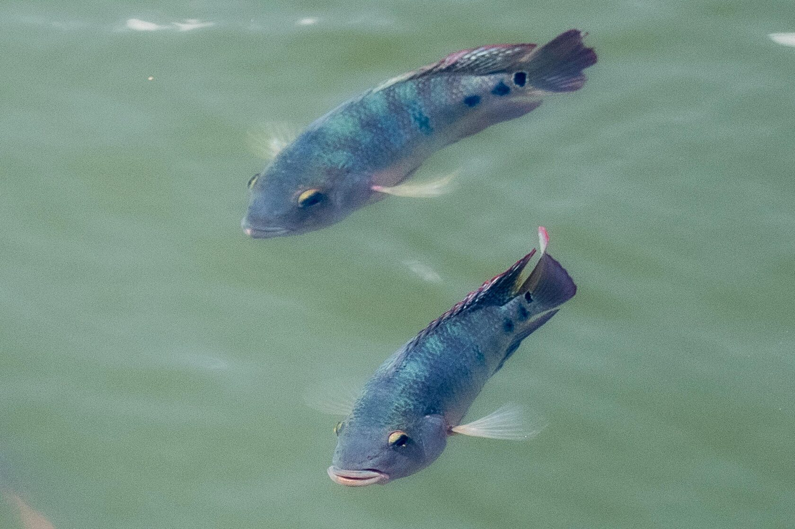
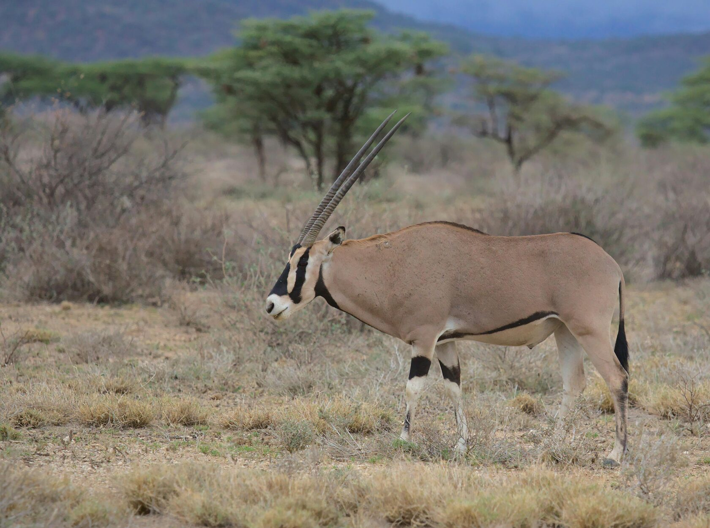

Biodiversity, or the different kinds of life on Earth, is the base for our ecosystems. This includes all kinds of plants, animals, microorganisms, and ecological functions they perform. There would be no life on Earth as we know it if there were no biodiversity. This is due to the different services it provides-managing the air, water, and soil.

1. Ecosystem Services: Biodiversity underpins key ecosystem services such as pollination, nutrient cycling, and water filtration. Forests clean the air, wetlands absorb floodwaters, and oceans control the climate. 2. Food and Agriculture: Most crops depend on pollinators like bees and butterflies. Genetic varieties in plants and animals ensure resistance against diseases and shifting conditions. 3. Medicinal Resources: Many medicines owe their origin to natural compounds found in plants, fungi, and marine organisms. Keeping biodiversity ensures that possibilities for more such discoveries do not go away. 4.Cultural Significance: Many cultures depend on biodiversity in terms of its spiritual and aesthetic contribution, connecting people with nature through culture and art.
Threats to Biodiversity Human activities, including deforestation, pollution, and climate change, threaten biodiversity. Habitat destruction displaces species, while pollution and overexploitation deplete resources. Invasive species disrupt ecosystems, pushing native organisms to extinction.

How to Protect Biodiversity
1. Conservation Efforts: Support protected areas, reserves, and sustainable land-use practices. 2.Reduce Waste and Pollution: Minimize plastic use, recycle, and support clean energy to reduce the impact on ecosystems. 3. Community Involvement: Participate in habitat restoration projects and programs that further environmental education. 4. Support Policies: Advocate for legislation that protects wildlife and curbs harmful practices.
Biodiversity is a treasure for the planet, crucial to ecological balance and survival for humankind. Each of us has roles to play in order to preserve it, for future generations to have a thriving planet.
We must take care of biodiversity because it is the lifeblood of Earth.